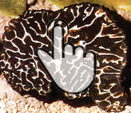

The types of truffles and harvesting periods
Come ogni tesoro che si rispetti, il pregiato tartufo ha bisogno di esperti cavatori che con la loro esperienza lo estraggono con molta cura, pronto per esser utilizzato in gustose ricette.
Il tartufo si presenta come un tubero dalle dimensioni e dal colore variabile a seconda della specie: ci sono infatti molte qualità fra cui i tartufi bianco o nero pregiato, il tartufo uncinato, il tartufo bianchetto, il tartufo nero d'inverno, il tartufo estivo o scorzone, tutte presenti in Abruzzo.
Come immaginabile, i periodi della raccolta dei tartufi sono bariabili.
Secondo la Legge Regionale n. 66 del 21/12/2012 vengono determinati dei periodi in cui lasciar riposare il tartufo per la propria produzione, in modo da mantenere sempre vivo il nostro terreno incontaminato.
In diretta correlazione con il periodo di raccolta (e con la pezzatura), il prezzo del tartufo varia a seconda della grandezza e della tipologia raccolta, per questo chiediamo ai nostri clienti di contattarci ogni qual volta sia necessario un ordine poichè il prezzo varia in base a molte sue caratteristiche
Il tartufo si presenta come un tubero dalle dimensioni e dal colore variabile a seconda della specie: ci sono infatti molte qualità fra cui i tartufi bianco o nero pregiato, il tartufo uncinato, il tartufo bianchetto, il tartufo nero d'inverno, il tartufo estivo o scorzone, tutte presenti in Abruzzo.
Come immaginabile, i periodi della raccolta dei tartufi sono bariabili.
Secondo la Legge Regionale n. 66 del 21/12/2012 vengono determinati dei periodi in cui lasciar riposare il tartufo per la propria produzione, in modo da mantenere sempre vivo il nostro terreno incontaminato.
In diretta correlazione con il periodo di raccolta (e con la pezzatura), il prezzo del tartufo varia a seconda della grandezza e della tipologia raccolta, per questo chiediamo ai nostri clienti di contattarci ogni qual volta sia necessario un ordine poichè il prezzo varia in base a molte sue caratteristiche

Tartufo Bianco
Tuber Magnatum Pico
Caratteristiche: esternamente presenta una superficie liscia di colore giallo ocra o giallo olivastro. La polpa interna è ...

Tartufo Nero, Scorzone
Tuber aestivum
Caratteristiche: il peridio presenta un colore nero, con verruche sporgenti, di grosse dimensioni, che lo rendono tipico. La gleba ...

Tartufo Nero Liscio
Tuber Melanosporum nero pregiato
Caratteristiche: il peridio è di colore bruno rossiccio, talvolta con macchie color ruggine, presenta delle lievi verruche...

Tartufo uncinato, Scorzone invernale
Tartufo nero, Tuber Uncinatum
Caratteristiche: è molto simile al Tuber aestivum ma presenta verruche meno grosse; la gleba è molto più scura; il profumo è ...